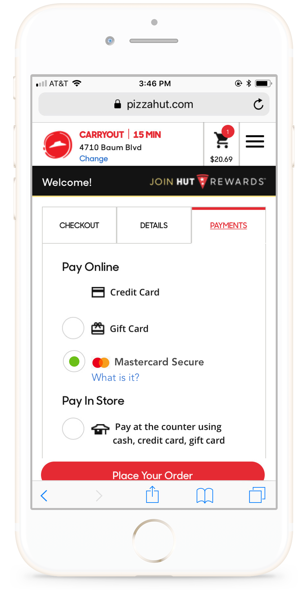

Mobile Checkout
Concept
One smaller prototype for a merchant checkout implementation we made was for ordering via a mobile browser or native app for a Pizza Hut order. This primarily was to see how people could be introduced to a Continuous Authentication service from Mastercard or their issuer on merchant sites. We tested a variety of messaging, sequence flows, and UI designs to try and get people to learn about and opt-in to the service.
Research Questions
- Are merchant sites a reasonable context to opt-in interested customers?
- Which do customers respond best to - convenience or security?
- Which types of UI elements seem to convey security the most?
- Where in a checkout flow is a reasonable spot to advertise this new service?
Methodology
Number of Users:
Prototypes
1. Basic flow, no different to current checkout experience
2. Onboarding to a Continuous Authentication system via Pizza Hut, redirected to the Citibank onboarding
Findings
We found users were not at all interested in learning about anything new while trying to buy a separate product. Users did not read any messaging or clicked out of it immediately.
01.Users will not go out of their way to 'learn more' about a product or service.
02.Out of 5 users, not a single one clicked on the "What is it?" link
03.Customers don't want to leave the checkout payment flow to go to the bank app (would just cancel out)
"I closed it because I wanted to continue with the order"
04.Rules of thumb, or heuristics, are powerful ways to make users feel more secure
"The green check make me feel happy. It told me I'm verified. It reassures me that everything is working great."
"The 2nd one is my fave because it's more like Paypal."